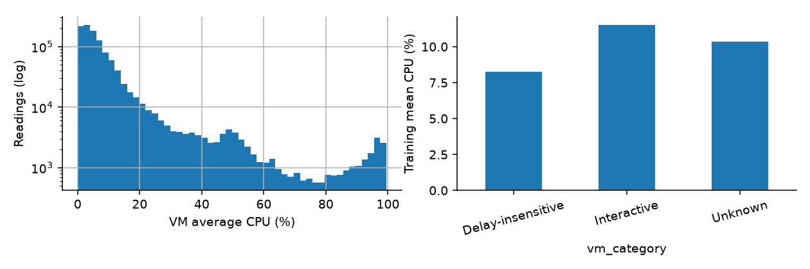
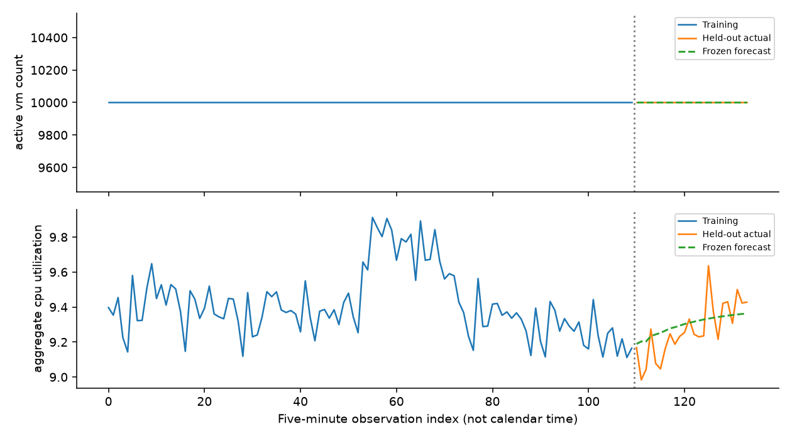

For this selected Azure VM population, a small regularized autoregression improves two-hour average-CPU forecasting over last-value persistence. Training-only rolling validation selected ridge AR(6); its final holdout MAE is 0.0987 percentage points, compared with 0.1468 for persistence (32.73% lower). Holdout RMSE is 0.1203 versus 0.1848. These are aggregate utilization errors, not percentages of total physical cloud capacity.
The active-VM target is exactly 10,000 throughout. Persistence forecasts it without error. This is mostly a consequence of complete-trace dataset selection, not evidence of predicting real fleet churn. CPU forecasting is the informative part of this experiment.
The exact data-v1 release contains 1,340,000 readings for 10,000 VMs and 134 five-minute timestamps. Source seconds run from 0 to 39,900, a first-to-last span of 11.083 hours. There are no missing fields, duplicate VM/timestamp pairs, invalid CPU averages, min/average/max inconsistencies, or missing grid readings. Metadata has one row per VM. All three release SHA-256 checks pass.
At timestamp t, active count is the number of distinct VMs with a finite average CPU in [0,100]. Aggregate CPU is the unweighted mean of these valid VM averages. Invalid readings would be excluded from both targets; duplicates and entirely missing timestamps cause a clear error instead of silent repair. Each VM has exactly 134 valid readings in the supplied release, so no imputation or resampling is needed.
Observations 1–110 (seconds 0–32,700) are training. Observations 111–134 (33,000–39,900) are a fixed 24-step test. Full targets are constructed first, but only the training prefix enters modeling, selection and workload summaries. Test values enter the evaluation function only after selection is saved and predictions written. Timestamps are source-relative seconds; mapping them to a real date, weekday or time zone would be unsupported.
Contracts: github.com/atomityhq/forecasting-challenge (ASSIGNMENT.md, DATASET.md, SUBMISSION.md). Data provenance: release data-v1/DATA_CARD.md, derived from Microsoft Azure Public Dataset V2. Upstream starter revision: 6e5ac0e4d2f1d81fab0903ce0a974037745db35b. All numerical findings in this report come from reports/artifacts, generated by the supplied implementation.
Training aggregate CPU averages 9.414% with temporal standard deviation 0.194 percentage points, and ranges from 9.112% to 9.912%. Lag-one autocorrelation is 0.667, supporting a small short-memory candidate, but not establishing long-term periodicity.

The median VM reading is 5.12%, while the 99th percentile is 87.41%; 1.27% of training readings exceed 80%. Low fleet-average utilization therefore does not imply every VM has spare capacity. Per-VM scheduling and interactive-service protections remain necessary.
| vm_category | vms | mean_cpu | p95_cpu | vm_share |
|---|---|---|---|---|
| Delay-insensitive | 6180 | 8.2573 | 25.9401 | 0.6180 |
| Interactive | 3091 | 11.5051 | 49.1466 | 0.3091 |
| Unknown | 729 | 10.3547 | 52.4981 | 0.0729 |
Interactive VMs are 30.91% of the population but contribute about 37.78% of the summed unweighted average-CPU readings; their mean CPU is higher than the delay-insensitive segment. This is not a share of core-seconds because VM capacities differ. Category metadata may summarize a broader source history: it is used only for retrospective explanation, never as a forecast feature.
Core buckets also differ: the 2-core bucket contains 7,534 VMs and averages 9.764% CPU; the 4-core bucket contains 1,908 and averages 7.919%. The >24 bucket has only ten VMs, making its 6.619% average fragile. Bucket labels are not exact core counts, so no fabricated core-weighted demand conversion is attempted.
Observed additions and departures in training are both zero. Creation metadata equals source-second zero for every selected VM; deletion metadata ranges from 40,500 to 2,591,400, beyond this observation window. These fields do not provide a forecast-time churn signal and are excluded from modeling. Eligibility required complete traces, suppressing churn and survivorship failures by construction. Findings apply to the curated population, not the whole Azure fleet.
Eight fixed candidates are compared on each target using identical expanding origins: fit 1–38/predict 39–62; fit 1–62/predict 63–86; fit 1–86/predict 87–110. Each forecast is a complete two-hour path with no teacher forcing. Validation windows do not overlap, although expanding training windows and serially dependent observations mean the folds are not independent experiments.
| model | mae | rmse | MAE improvement % |
|---|---|---|---|
| ar_ridge | 0.1710 | 0.2109 | 17.8784 |
| mean12 | 0.1784 | 0.2243 | 14.3196 |
| ses02 | 0.1948 | 0.2394 | 6.4140 |
| ses05 | 0.2012 | 0.2460 | 3.3806 |
| mean24 | 0.2077 | 0.2472 | 0.2228 |
| last | 0.2082 | 0.2566 | 0.0000 |
| mean6 | 0.2140 | 0.2563 | -2.7893 |
| damped | 0.2532 | 0.3009 | -21.5923 |
CPU mean validation MAE for ridge AR is 0.1710 versus 0.2082 for persistence, a 17.88% improvement. Ridge does not win every fold: its MAEs are 0.1895, 0.1352 and 0.1882; persistence gives 0.1947, 0.2975 and 0.1324. The choice is based on the declared overall mean, not on selecting a favorable fold. Active-count models tie at zero; the simplest candidate, persistence, wins.
Persistence repeats the last value. Moving averages repeat the last 6/12/24-point mean. Exponential smoothing uses fixed alpha 0.2 or 0.5. The damped trend fits a slope to the last 12 observations and adds slope × sum(0.8^j), j=1…h. None of these settings is tuned on the final holdout.
Ridge AR uses the previous six target values in reverse chronological order, plus an intercept. At every fold it standardizes using that fold's training mean and population standard deviation only. It solves (XᵀX + 10D)β = Xᵀy with D's intercept entry zero, then forecasts recursively, adding its own predicted standardized values to history. On a constant/too-short history it falls back to persistence. Final fitting repeats this procedure on all 110 training observations.
No random shuffling, future lags, full-series normalization, source CPU summary features, deletion-time features, external data, or holdout-based tuning is used. All candidates receive the same output bounds. Calendar seasonality and high-capacity neural models are not justified by fewer than twelve hours of aggregate history. Model complexity is deliberately limited relative to sample size.
The candidate list, selected names, origins and input hashes are saved in selection.json before held-out evaluation. This documents the code's execution order, not a cryptographic proof of historical precommitment. A regression test changes all held-out labels and checks unchanged predictions and choices.
| target | model | mae | rmse | bias |
|---|---|---|---|---|
| active_vm_count | selected | 0.0000 | 0.0000 | 0.0000 |
| active_vm_count | last_baseline | 0.0000 | 0.0000 | 0.0000 |
| aggregate_cpu_utilization | selected | 0.0987 | 0.1203 | 0.0301 |
| aggregate_cpu_utilization | last_baseline | 0.1468 | 0.1848 | -0.1044 |

CPU MAE relative to persistence is 0.6727; RMSE improves by 34.90%. Positive bias means overprediction: the selected forecast's average error is +0.0301 percentage points, compared with -0.1044 for persistence. Count MAE/RMSE are both zero. A relative count improvement is undefined because the baseline denominator is zero, not 100% improvement.
Each validation fold defines a high-load threshold using only its fitting prefix's 90th CPU percentile. Across the selected model's 72 validation predictions, 16 are at or above that fold-specific threshold and their MAE is 0.2799 percentage points. Mean absolute error across lead times 1–6 is 0.1224, versus 0.2676 for leads 19–24. These are small-sample diagnostics, not statistically established horizon laws.
The final training-derived threshold is 9.6684%. The holdout contains zero points at or above it. Consequently, final-test high-load performance is unmeasurable, not perfect; no peak MAE is invented. The largest held-out CPU underprediction is 0.3022 percentage points for ridge versus 0.4714 for persistence.
The ridge path can regress toward the recent training mean and miss abrupt rises. Its third validation fold is worse than persistence, demonstrating regime sensitivity. The final holdout is less extreme than training-defined peak conditions, so its better aggregate score is not evidence of safe forecasting through an unseen surge. The constant count target cannot assess new VM launches, departures or data outages. Aggregate averaging also hides localized hot spots and five-minute sampling hides within-interval bursts.
Refresh a two-hour CPU forecast every five minutes once enough history is available. Add 0.4218 percentage points to each forecast as a provisional one-sided headroom signal. This value is the empirical 95th percentile of actual-minus-predicted residuals from the selected model's 72 validation forecasts, floored at zero. It is not a calibrated 95% prediction interval: the same folds selected the model, residuals are dependent, and different horizons are pooled.
The issued CPU forecasts range from 9.1890% to 9.3633%; forecast-plus-buffer ranges from 9.6108% to 9.7851%. None of the 24 holdout CPU values exceeds that upper signal. This is retrospective diagnostic coverage on a single quiet window, not a future reliability guarantee.
Use a breach of an operator-defined, SLA-tested utilization budget as an alert to review headroom; do not treat the training 90th percentile as a physical saturation threshold. Require live per-VM CPU, latency, memory and scheduler constraints before scaling down. Protect interactive workloads first; delay-insensitive work may be deferred only under an actual service policy. A larger buffer reduces under-provisioning risk but increases reserved idle capacity; a smaller one saves capacity while increasing the chance of queues or latency spikes.
There is no defensible formula here for exact server count: required targets are unweighted VM percentages, VM sizes are bucketed, and neither physical placements nor SLA limits are supplied. Constant-count accuracy provides no basis for fleet-wide churn planning.
Run python scripts/download_data.py after installing the pinned dependencies, then python -m pytest -q and python run.py --data challenge_data --output predictions.csv. The prediction file has exactly 24 chronological rows with timestamp, active_vm_count, aggregate_cpu_utilization, no index, and finite bounded values. The command recreates audit, selection, per-fold predictions, final metrics and figures. Report generation is separate and reads saved results only.
Tests cover starter metrics/splits, constant candidates, bounds, duplicate/gap rejection, invalid-reading exclusion, checksum failures, output contract, held-out-label mutation, smaller input populations/horizons and the default plotting/evaluation path. Official checksummed mode enforces the fixed release contract; explicit smoke mode allows reviewer replacement data without hard-coded public timestamps or a hard-coded 10,000 prediction.
Three folds and one two-hour test cannot establish generalization. Obtain a longer trace with representative arrivals/departures, evaluate across days and segments, measure within-interval peaks, and calibrate uncertainty on genuinely separate windows. Investigate more complex models only after those data and evaluation gaps are fixed. Implementation and writing used AI-assistant support; all metrics were actually computed by the supplied code. No private data, external ML API or paid compute was used.